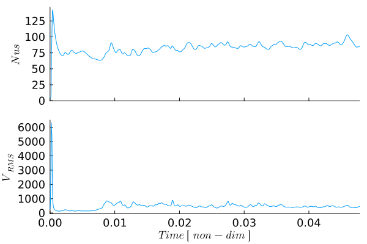

Mixed Heated Convection
This example demonstrates two-dimensional mixed-heated thermal convection using the finite-difference solvers provided by GeoModBox.jl. In contrast to the previous examples, convection is driven by the combined effects of basal heating and uniform internal heat production. The imposed temperature difference across the domain and the volumetric heat source together generate buoyancy forces that drive mantle-like convection.
The example combines the numerical components introduced throughout the previous convection examples. The coupled Stokes and heat equations are solved using adaptive time stepping, semi-Lagrangian advection, and a Crank–Nicolson discretization of the heat equation solved with the general defect-correction framework. During the simulation, diagnostic quantities such as the Nusselt number, the root-mean-square velocity, and the horizontally averaged temperature profile are monitored to characterize the evolution of the convective system.
This example combines basal and internal heating with
\[\begin{equation} Ra_b = 10^6,\qquad Ra_Q \approx 1.5 \cdot 10^7. \end{equation}\]
The example uses the momentum, advection, and heat-equation solvers of GeoModBox.jl together with standard Julia packages for sparse linear algebra, visualization, and performance measurements.
using Plots, ExtendableSparse
using GeoModBox
using GeoModBox.InitialCondition, GeoModBox.MomentumEquation.TwoD
using GeoModBox.AdvectionEquation.TwoD, GeoModBox.HeatEquation.TwoD
using GeoModBox.Scaling
using Statistics, LinearAlgebra
using Printf, TimerOutputs, LaTeXStrings, MeasuresThe following section specifies the initial temperature distribution together with several visualization parameters used to generate animations and diagnostic figures during the simulation.
to = TimerOutput()
# Define Initial Condition ========================================== #
# Temperature -
# 1) circle, 2) gaussian, 3) block, 4) linear, 5) lineara
# !!! Gaussian is not working!!!
Ini = (T=:lineara,)
# ------------------------------------------------------------------- #
# Plot Einstellungen ================================================ #
Pl = (
qinc = 10,
qsc = 1.0e-4
)
# Animationssettings ================================================ #
path = string("./examples/ThermalConvection/Results/")
anim = Plots.Animation(path, String[] )
save_fig = 1
# ------------------------------------------------------------------- #The computational domain and material properties are defined below. In addition to the imposed temperature difference between the lower and upper boundaries, a uniform internal heat-production rate is specified. Consequently, convection is driven by both basal heating and volumetric heat generation.
@timeit to "Ini" begin
# Modellgeometrie Konstanten ======================================== #
M = Geometry(
xmin = 0.0, # [ m ]
xmax = 11600e3, # [ m ]
ymin = -2900e3, # [ m ]
ymax = 0.0, # [ m ]
)
# ------------------------------------------------------------------- #
# Referenzparameter ================================================= #
P = Physics(
g = 9.81, # Schwerebeschleunigung [m/s^2]
ρ₀ = 3300.0, # Hintergunddichte [kg/m^3]
k = 4.125, # Thermische Leitfaehigkeit [ W/m/K ]
cp = 1250.0, # Heat capacity [ J/kg/K ]
α = 2.0e-5, # Thermischer Expnasionskoef. [ K^-1 ]
Q₀ = 1.84e-08, # Waermeproduktionsrate pro Volumen [W/m^3]
η₀ = 3.947725485e23, # Viskositaet [ Pa*s ] [1.778087025e21]
ΔT = 2500.0, # Temperaturdifferenz
# Falls Ra < 0 gesetzt ist, dann wird Ra aus den obigen Parametern
# berechnet. Falls Ra gegeben ist, dann wird die Referenzviskositaet so
# angepasst, dass die Skalierungsparameter die gegebene Rayleigh-Zahl
# ergeben.
Ra = 1.0e6, # Rayleigh number
Ttop = 273.15, # Temperatur an der Oberfläche [ K ]
)
# ------------------------------------------------------------------- #The governing equations are solved in non-dimensional form. Therefore, characteristic scaling parameters are computed from the physical model and subsequently used to non-dimensionalize all variables.
# Definiere Skalierungskonstanten =================================== #
S = ScalingConstants!(M,P)
# ------------------------------------------------------------------- #The computational grid consists of a staggered finite-difference mesh with pressure and temperature stored at cell centers and velocity components located on the corresponding cell faces.
# Gittereinstellungen =============================================== #
NC = (
x = 400,
y = 100,
)
NV = (
x = NC.x + 1,
y = NC.y + 1,
)
Δ = GridSpacing(
x = (M.xmax - M.xmin)/NC.x,
y = (M.ymax - M.ymin)/NC.y,
)
# ------------------------------------------------------------------- #All numerical fields required during the simulation are allocated. Besides the primary solution variables and auxiliary work arrays, a volumetric heat-production field is initialized and assigned a uniform value throughout the computational domain.
# Initialisierung der Datenfelder =================================== #
D = DataFields(
Q = zeros(Float64,(NC...)),
T = zeros(Float64,(NC...)),
T0 = zeros(Float64,(NC...)),
T_ex = zeros(Float64,(NC.x+2,NC.y+2)),
T_ex0 = zeros(Float64,(NC.x+2,NC.y+2)),
Told_ex = zeros(Float64,(NC.x+2,NC.y+2)),
ρ = ones(Float64,(NC...)),
vx = zeros(Float64,(NV.x,NV.y+1)),
vy = zeros(Float64,(NV.x+1,NV.y)),
Pt = zeros(Float64,(NC...)),
vxc = zeros(Float64,(NC...)),
vyc = zeros(Float64,(NC...)),
vxco = zeros(Float64,(NC...)),
vyco = zeros(Float64,(NC...)),
vc = zeros(Float64,(NC...)),
ΔTtop = zeros(Float64,NC.x),
ΔTbot = zeros(Float64,NC.x),
)
# Wärmeproduktionsrate ------
@. D.Q = P.Q₀
# ------------------------------------------------------------------- #
# Needed for the defect correction solution ---
divV = zeros(Float64,NC...)
ε = (
xx = zeros(Float64,NC...),
yy = zeros(Float64,NC...),
xy = zeros(Float64,NV...),
)
τ = (
xx = zeros(Float64,NC...),
yy = zeros(Float64,NC...),
xy = zeros(Float64,NV...),
)
# Residuals ---
Fm = (
x = zeros(Float64,NV.x, NC.y),
y = zeros(Float64,NC.x, NV.y)
)
FPt = zeros(Float64,NC...)
# Heat Flux calculations ---
Tv1 = zeros(NV.x,1)
Tv2 = zeros(NV.x,1)
dTdy = zeros(NV.x,1)
# ------------------------------------------------------------------- #The simulation time, stability factors for the Courant and diffusion criteria, and arrays used to store diagnostic quantities are initialized. During the simulation, the time step is adjusted automatically according to the most restrictive stability criterion.
# Zeitparameter ===================================================== #
T = TimeParameter(
tmax = 1000000.0, # [ Ma ]
Δfacc = 0.9, # Courant time factor
Δfacd = 0.9, # Diffusion time factor
itmax = 10000, # Maximum iterations
)
T.tmax = T.tmax*1e6*T.year # [ s ]
T.Δc = T.Δfacc * minimum((Δ.x,Δ.y)) /
(sqrt(maximum(abs.(D.vx))^2 + maximum(abs.(D.vy))^2))
T.Δd = T.Δfacd * (1.0 / (2.0 * P.κ *(1.0/Δ.x^2 + 1/Δ.y^2)))
T.Δ = minimum([T.Δd,T.Δc])
# Statistics -------------------------------------------------------- #
Time = zeros(T.itmax)
Nus = zeros(T.itmax)
meanV = zeros(T.itmax)
meanT = zeros(T.itmax,NC.y+2)
epsV_history = fill(NaN, T.itmax)
find = 0
count = 0
epsV0 = 0
final_step = 0
# ------------------------------------------------------------------- #Once the scaling constants have been determined, all dimensional model parameters are converted into their corresponding non-dimensional values used by the numerical solvers.
# Skalierungsgesetze ================================================ #
ScaleParameters!(S,M,Δ,T,P,D)
# ------------------------------------------------------------------- #Finally, one- and two-dimensional coordinate arrays are generated for the staggered grid. These coordinates are used throughout the simulation for interpolation, visualization, and evaluation of the finite-difference operators.
# Koordinaten ======================================================= #
x = (
c = LinRange(M.xmin+Δ.x/2,M.xmax-Δ.x/2,NC.x),
ce = LinRange(M.xmin - Δ.x/2.0, M.xmax + Δ.x/2.0, NC.x+2),
v = LinRange(M.xmin,M.xmax,NV.x),
)
y = (
c = LinRange(M.ymin+Δ.y/2,M.ymax-Δ.y/2,NC.y),
ce = LinRange(M.ymin - Δ.y/2.0, M.ymax + Δ.y/2.0, NC.y+2),
v = LinRange(M.ymin,M.ymax,NV.y),
)
x1 = (
c2d = x.c .+ 0*y.c',
v2d = x.v .+ 0*y.v',
vx2d = x.v .+ 0*y.ce',
vy2d = x.ce .+ 0*y.v',
)
x = merge(x,x1)
y1 = (
c2d = 0*x.c .+ y.c',
v2d = 0*x.v .+ y.v',
vx2d = 0*x.v .+ y.ce',
vy2d = 0*x.ce .+ y.v',
)
y = merge(y,y1)
# ------------------------------------------------------------------- #
endThe initial temperature field is generated according to the selected configuration. Several predefined initial perturbations are available. Fixed temperatures are prescribed at the upper and lower boundaries, while the uniform internal heat source continuously supplies thermal energy throughout the simulation.
# Anfangsbedingungen ================================================ #
@timeit to "IniCondition" begin
IniTemperature!(Ini.T,M,NC,D,x,y;Tb=P.Tbot,Ta=P.Ttop)
end
# ------------------------------------------------------------------- #Dirichlet boundary conditions prescribe the temperatures at both the upper and lower boundaries, representing surface cooling and basal heating, respectively. The side walls are thermally insulating using homogeneous Neumann conditions, while free-slip velocity boundary conditions are imposed on all boundaries.
# Randbedingungen =================================================== #
@timeit to "BoundaryCondition" begin
# Temperatur ------
TBC = (
type = (W=:Neumann, E=:Neumann,N=:Dirichlet,S=:Dirichlet),
val = (W=zeros(NC.y),E=zeros(NC.y),
N=P.Ttop.*ones(NC.x),S=P.Tbot.*ones(NC.x)))
# Geschwindigkeit ------
VBC = (
type = (E=:freeslip,W=:freeslip,S=:freeslip,N=:freeslip),
val = (E=zeros(NV.y),W=zeros(NV.y),S=zeros(NV.x),N=zeros(NV.x),
vyS=0.0,vyN=0.0,vxW=0.0,vxE=0.0),
)
end
# ------------------------------------------------------------------- # The specified Rayleigh number is enforced by adjusting the reference viscosity whenever necessary.
# Rayleigh Zahl Bedingungen ========================================= #
if P.Ra < 0
# Falls die Rayleigh Zahl nicht explizit angegeben wird, dann
# wird sie hier berechnet
P.Ra = P.ρ₀*P.g*P.α*P.ΔT*S.hsc^3/P.η₀/P.κ
else
# Falls die Rayleigh Zahl explizit angegeben ist, dann wird hier
# die Referenzviskositaet η₀ angepasst.
P.η₀ = P.ρ₀*P.g*P.α*P.ΔT*S.hsc^3/P.Ra/P.κ
end
filename = string("Mixed_Heated_",P.Ra[1],
"_",NC.x,"_",NC.y,
"_",Ini.T)
# =================================================================== #Before entering the time loop, the matrices and work arrays required by the momentum and energy solvers are allocated. Since the viscosity is constant in this example, the momentum matrix only needs to be assembled and factorized once, significantly reducing the computational cost.
# Lineares Gleichungssystem ========================================= #
@timeit to "EquationSetup" begin
# Momentum Conservation Equation (MCE) ------
niterM = 50
atolM = 1e-8 # Absolute tolerance
rtolM = 1e-5 # # Relative convergence tolerance (RM/R0)
RM = 0.0 # Initialize absolute residual
RMrel = 0.0 # Initialize relative residual
# Numbering, without ghost nodes! ---
off = [ NV.x*NC.y, # vx
NV.x*NC.y + NC.x*NV.y, # vy
NV.x*NC.y + NC.x*NV.y + NC.x*NC.y ] # Pt
Num = (
Vx = reshape(1:NV.x*NC.y, NV.x, NC.y),
Vy = reshape(off[1]+1:off[1]+NC.x*NV.y, NC.x, NV.y),
Pt = reshape(off[2]+1:off[2]+NC.x*NC.y,NC...),
T = reshape(1:NC.x*NC.y, NC.x, NC.y),
)
ndofM = maximum(Num.Pt)
KM = ExtendableSparseMatrix(ndofM,ndofM)
δx = zeros(maximum(Num.Pt))
F = zeros(maximum(Num.Pt))
# Assemble Matrix for momentum equation ---
# Optimization outside time loop since viscosity is constant ---
KM = Assemblyc(NC, NV, Δ, 1.0, VBC, Num)
KMfac = lu(KM.cscmatrix)
# Energieerhaltung (EEG) ------
niterT = 10
ϵT = 1e-12
RE = 0.0
ndofT = maximum(Num.T)
KT = ExtendableSparseMatrix(ndofT,ndofT)
δT = zeros(maximum(Num.T))
RT = zeros(Float64,NC...)
∂2T = (∂x2=zeros(NC.x, NC.y), ∂y2=zeros(NC.x, NC.y),
∂x20=zeros(NC.x, NC.y), ∂y20=zeros(NC.x, NC.y))
end
# ------------------------------------------------------------------- #The simulation proceeds by repeatedly solving the coupled momentum and energy equations. At every time step, buoyancy forces generated by both the imposed basal temperature difference and the internal heat production drive the incompressible flow. The resulting velocity field is subsequently used to advect the temperature before thermal diffusion and internal heat production are evaluated.
# Zeitschleife ====================================================== #
@timeit to "Time Loop" begin
for it = 1:T.itmax
find = it
R0 = 0.0
verbose_step = mod(it, 400) == 0 || it == 1 || final_step == 1
if it>1
Time[it] = Time[it-1] + T.Δ
end
verbose_step && @printf("Time step: #%04d, Time [non-dim]: %04e\n ",it,
Time[it])The incompressible Stokes equations are solved using a defect-correction iteration. Since the system matrix remains constant for isoviscous convection, only the residual vector changes between iterations.
verbose_step && @printf("---Momentum Calculation ---\n")
# ------ MCE ------
if it == 1
D.vx[2:end-1,:] .= 0.0
D.vy[:,1:end-1] .= 0.0
D.Pt .= 0.0
end
# Residual Calculation ------
@. D.ρ = -P.Ra*D.T
@timeit to "Residual Iteration" begin
for iter = 1:niterM
@timeit to "Residual" begin
Residuals2Dc!(D,VBC,ε,τ,divV,Δ,1.0,1.0,Fm,FPt)
F[Num.Vx] .= Fm.x
F[Num.Vy] .= Fm.y
F[Num.Pt] .= FPt
RM = norm(F)/length(F)
if iter == 1
R0 = max(RM, eps())
end
RMrel = RM/R0
if verbose_step
@printf(" MCE %2d: ||R|| = %1.4e, ||R||/||R₀|| = %1.4e\n",iter,RM,RMrel)
end
(RM < atolM || RM/R0 < rtolM) && break
end
# Lösen des lineare Gleichungssystems ------
@timeit to "Solution" begin
δx .= -(KMfac \ F)
end
# Update unbekante Variablen ------
@timeit to "Update Solution" begin
D.vx[:,2:end-1] .+= δx[Num.Vx]
D.vy[2:end-1,:] .+= δx[Num.Vy]
D.Pt .+= δx[Num.Pt]
end
end
end
# ======
# Berechnung der Geschwindikeit auf den Centroids ------
for i = 1:NC.x
for j = 1:NC.y
D.vxc[i,j] = (D.vx[i,j+1] + D.vx[i+1,j+1])/2
D.vyc[i,j] = (D.vy[i+1,j] + D.vy[i+1,j+1])/2
end
end
@. D.vc = sqrt(D.vxc^2 + D.vyc^2)After the velocity solution has converged, the face-centered velocities are interpolated to the cell centers and several diagnostic quantities are evaluated. These include the Nusselt number, the root-mean-square velocity, and the horizontally averaged temperature profile, which together characterize the evolution of the mixed-heated convection system.
# Wärmefluss an der Oberfläche ================================== #
# Get temperature at the vertices
@. Tv1 = (D.T_ex[1:end-1,end] + D.T_ex[2:end,end] +
D.T_ex[1:end-1,end-1] + D.T_ex[2:end,end-1])/4
@. Tv2 = (D.T_ex[1:end-1,end-1] + D.T_ex[2:end,end-1] +
D.T_ex[1:end-1,end-2] + D.T_ex[2:end,end-2])/4
# Calculate temperature gradient ---
@. dTdy = -(Tv1 - Tv2)/Δ.y
# Calculate Nusselt number ---
Nus[it] = 0.0
# Trapezoidal integration -
for i = 1:NV.x
if i == 1 || i == NV.x
afac = 1
else
afac = 2
end
Nus[it] += afac * dTdy[i]
end
Nus[it] *= Δ.x/2
meanT[it,:] = mean(D.T_ex,dims=1)
meanV[it] = sqrt(mean(D.vxc.^2 .+ D.vyc.^2))
# --------------------------------------------------------------- #The current state of the simulation is visualized periodically. The resulting figure combines the temperature field, velocity vectors, and the horizontally averaged temperature profile, providing a concise overview of the evolving convection pattern.
# Plot ========================================================== #
if verbose_step
p = PlotFieldProfile(Pl, M, D, x, y, @view(meanT[it, :]))
if save_fig == 1
Plots.frame(anim,p)
elseif save_fig == 0
p !== nothing && display(p)
end
end
if final_step == 1
@printf(" Maximum Time reached!\n")
break
end
# --------------------------------------------------------------- #An adaptive time step is computed from both the Courant stability criterion and the thermal diffusion criterion. If the next step would exceed the prescribed maximum simulation time, the time step is reduced accordingly so that the simulation terminates exactly at the requested final time.
# Berechnung der Zeitschrittlänge =============================== #
T.Δc = T.Δfacc * minimum((Δ.x,Δ.y)) /
(sqrt(maximum(abs.(D.vx))^2 + maximum(abs.(D.vy))^2))
T.Δd = T.Δfacd * (1.0 / (2.0 *(1.0/Δ.x^2 + 1/Δ.y^2)))
T.Δ = minimum([T.Δd,T.Δc])
if Time[it] + T.Δ >= T.tmax
T.Δ = T.tmax - Time[it]
final_step = 1
end
# --------------------------------------------------------------- #The temperature field is transported using the semi-Lagrangian advection scheme. The velocity field from the current Stokes solution is used to trace the departure points of the fluid parcels.
# Advektion ===================================================== #
if it == 1
@. D.vxco = D.vxc
@. D.vyco = D.vyc
end
@timeit to "Advection" begin
semilagc2D!(D.T,D.T_ex,D.vxc,D.vyc,D.vxco,D.vyco,x,y,T.Δ)
end
@. D.vxco = D.vxc
@. D.vyco = D.vyc
# --------------------------------------------------------------- #Following advection, the heat equation is discretized in time using the Crank–Nicolson scheme. The resulting linear system is solved iteratively using the general defect-correction framework introduced in the previous examples. In addition to thermal diffusion, the energy equation includes a uniform volumetric heat-production term, representing radiogenic heating within the mantle.
# Diffusion ===================================================== #
@timeit to "Diffusion" begin
verbose_step && @printf("---Energy Calculation---\n")
# Update temperature field ---
@. D.T0 = D.T
# Assemble linear system
KT = AssembleMatrix2Dc(1.0, TBC, Num, NC, Δ, T.Δ[1];C=0.5)
# Solve for temperature correction: Cholesky factorisation
KTc = cholesky(KT.cscmatrix)
for iter = 1:niterT
# Evaluate residual
ComputeResiduals2Dc!( RT, D.T, D.T_ex, D.T0, D.T_ex0, ∂2T,
1.0, TBC, Δ, T.Δ[1]; C = 0.5, Q = D.Q, ρ = 1.0, cp = 1.0 )
RE = norm(RT)/length(RT)
if verbose_step
@printf(" ECE %2d: ||RE|| = %1.4e\n", iter, RE)
end
RE < ϵT ? break : nothing
# Solve for temperature correction: Back substitutions
δT .= -(KTc\RT[:])
# Update temperature
@. D.T += δT[Num.T]
end
# Update extended field for advection scheme ---
D.T_ex[2:end-1,2:end-1] .= D.T
end
# --------------------------------------------------------------- #After each time step, the simulation is checked for termination. The computation stops either when the prescribed maximum simulation time has been reached or when the temporal variations of the root-mean-square velocity indicate that a statistically steady convective state has been achieved.
# Check break =================================================== #
# If the maximum time is reached or if the models reaches steady
# state the time loop is stoped!
if Time[it] > 0.0038
epsC = 0.001
ind = searchsortedfirst(@view(Time[1:it]), Time[it] - 0.05)
epsV = std(@view meanV[ind:it])
if count == 0
epsV0 = max(epsV, eps(Float64))
count += 1
end
epsV /= epsV0
epsV_history[it] = epsV
find = it
verbose_step && @printf("ε_Vr = %g, ε_Cr = %g \n",epsV,epsC)
if Time[it] >= T.tmax
@printf("Maximum time reached!\n")
find = it
break
elseif (epsV <= epsC)
@printf("Convection reaches steady state at %i!\n",it)
find = it
break
end
end
# --------------------------------------------------------------- #
verbose_step && @printf("\n")
end
endAfter the simulation has finished, the generated animation and several diagnostic figures are written to disk. These include the convergence history, the final convection pattern, the temporal evolution of the Nusselt number and RMS velocity, and the mean temperature profile.
if save_fig == 1
# Write the frames to a GIF file
Plots.gif(anim, string( path, filename, ".gif" ), fps = 10)
foreach(rm, filter(startswith(string(path,"00")), readdir(path,join=true)))
end
valid = findall(isfinite, epsV_history)
k = plot(
valid,
log10.(epsV_history[valid]),
xlabel = "it",
ylabel = "log₁₀(εᵥ/εᵥ₀)",
label = "",
markershape = :circle,
markercolor = :black,
)
# Save final figure ===================================================== #
p2 = PlotFieldProfile(Pl, M, D, x, y, @view(meanT[find, :]))
if save_fig == 1
savefig(k,string("./examples/ThermalConvection/Results/Mixed_Heated_Iterations",P.Ra,
"_",NC.x,"_",NC.y,
"_",Ini.T,".png"))
savefig(p2,string("./examples/ThermalConvection/Results/Mixed_Heated_Final_Stage",P.Ra,
"_",NC.x,"_",NC.y,"_it_",find,"_",
Ini.T,"_",".png"))
elseif save_fig == 0
display(p2)
display(k)
end
# ----------------------------------------------------------------------- #
# Plot time serieses ==================================================== #
q2 = plot(layout=(2,1),size=(1200,900),dpi = 300)
q2 = plot(Time[1:find],Nus[1:find],
xlabel= "", ylabel= L"Nus",label="",
xformatter = _ -> "",
xlims=(0,Time[find]),
guidefontsize = 12, tickfontsize = 12,
titlefontsize = 12, grid = false,
layout=(2,1),subplot=1)
plot!(q2,Time[1:find],meanV[1:find],
xlabel= L"Time\ [\ non-dim\ ]", ylabel= L"V_{RMS}",label="",
xformatter =:auto,
guidefontsize = 12, tickfontsize = 12,
titlefontsize = 12,grid = false,
xlims=(0,Time[find]),
layout=(2,1),subplot=2)
if save_fig == 1
savefig(q2,string("./examples/ThermalConvection/Results/Mixed_Heated_TimeSeries",P.Ra,
"_",NC.x,"_",NC.y,"_",Ini.T,"_",".png"))
elseif save_fig == 0
display(q2)
end
# ======================================================================= #
# Plot Mean temperature profile over time =============================== #
q3 = plot(mean(meanT[1:find,:],dims=1)',y.ce,
xlabel=L"⟨T⟩",ylabel=L"y",title=L"Mean Temperature",
xlims=(0,1),ylims=(-1,0),
label="",aspect_ratio=1)
if save_fig == 1
savefig(q3,string("./examples/ThermalConvection/Results/Mixed_Heated_TProfile",P.Ra,
"_",NC.x,"_",NC.y,"_",Ini.T,"_",".png"))
elseif save_fig == 0
display(q3)
end
display(to)
# ======================================================================= #
Figure 1. Evolution of mixed-heated thermal convection for a basal and internal-heating Rayleigh number of $Ra_b = 10^6, Ra_Q \approx 1.5 \cdot 10^7$. The convective flow is driven by the combined effects of basal heating and uniform internal heat production. The animation illustrates the transition from the initial conductive temperature field to a statistically steady convective state. Each frame shows the temperature field, velocity vectors, and the horizontally averaged temperature profile.

Figure 2. Temporal evolution of the Nusselt number ($Nu$) and the root-mean-square velocity ($V_\mathrm{RMS}$). The Nusselt number measures the efficiency of convective heat transport through the upper boundary relative to pure conduction, while the RMS velocity characterizes the overall vigor of the convective circulation. Both quantities evolve from the initial conductive state toward a statistically steady mixed-heated convection regime.
The following helper function generates the main visualization used throughout the example. It combines the temperature field, velocity vectors, and the horizontally averaged temperature profile into a single figure.
function PlotFieldProfile(Pl,M,D,x,y,Tmean)
# ---------------------------------------------------------------------------
# Combined temperature field and mean-temperature profile
# ---------------------------------------------------------------------------
p = nothing
# Width of the physical model domain
Lx = M.xmax - M.xmin
# Geometry of the profile strip
profile_gap = 0.08Lx # Gap between field and profile
profile_width = 0.22Lx # Width assigned to the profile
xprofile_min = M.xmax + profile_gap
xprofile_max = xprofile_min + profile_width
# # Mean-temperature profile at the current time step
# Tmean = meanT[it, :]
# Map <T> = 0...1 onto the profile strip
xprofile = xprofile_min .+ profile_width .* Tmean
# Full horizontal extent of the combined figure
xmax_plot = xprofile_max + 0.04Lx
p = plot(
size = (1900, 500),
dpi = 300,
guidefontsize = 28,
tickfontsize = 18,
titlefontsize = 28,
legend = false,
framestyle = :box,
left_margin = 20mm,
right_margin = 10mm,
bottom_margin = 15mm,
top_margin = 8mm,
)
# ---------------------------------------------------------------------------
# Temperature field
# ---------------------------------------------------------------------------
heatmap!(
p,
x.c,
y.c,
D.T',
xlabel = L"x",
ylabel = L"y",
title = L"Temperature",
color = cgrad(:lajolla),
colorbar = true,
aspect_ratio = :equal,
clims = (0,1),
xlims = (M.xmin, xmax_plot),
ylims = (M.ymin, M.ymax),
)
contour!(
p,
x.c,
y.c,
D.T',
linewidth = 1,
color = "white",
alpha = 0.5,
)
quiver!(
p,
x.c2d[1:Pl.qinc:end, 1:Pl.qinc:end],
y.c2d[1:Pl.qinc:end, 1:Pl.qinc:end],
quiver = (
D.vxc[1:Pl.qinc:end, 1:Pl.qinc:end] .* Pl.qsc,
D.vyc[1:Pl.qinc:end, 1:Pl.qinc:end] .* Pl.qsc,
),
linewidth = 1,
linealpha = 0.5,
color = "black",
)
# ---------------------------------------------------------------------------
# Mean-temperature profile
# ---------------------------------------------------------------------------
# White background for the profile strip
plot!(
p,
Shape(
[xprofile_min, xprofile_max, xprofile_max, xprofile_min],
[M.ymin, M.ymin, M.ymax, M.ymax],
),
fillcolor = :white,
fillalpha = 1.0,
linecolor = :black,
linewidth = 1.5,
)
# Optional horizontal reference lines
for ytick in range(M.ymin, M.ymax, length=6)
plot!(
p,
[xprofile_min, xprofile_max],
[ytick, ytick],
color = :gray,
alpha = 0.25,
linewidth = 0.8,
)
end
# Mean-temperature profile
plot!(
p,
xprofile,
y.ce,
color = :black,
linewidth = 4,
)
# Separator between field and profile
vline!(
p,
[xprofile_min],
color = :black,
linewidth = 1.5,
)
# Profile title
annotate!(
p,
(
0.5 * (xprofile_min + xprofile_max),
M.ymax + 0.055 * (M.ymax - M.ymin),
text(L"\langle T\rangle", 24, :center),
),
)
# Profile-axis labels: 0, 0.5, 1
for (Ttick, label) in zip((0.0, 0.5, 1.0), ("0", "0.5", "1"))
xtick = xprofile_min + profile_width * Ttick
# Small tick mark
plot!(
p,
[xtick, xtick],
[M.ymin, M.ymin + 0.018 * (M.ymax - M.ymin)],
color = :black,
linewidth = 1.2,
)
# Tick label
annotate!(
p,
(
xtick,
M.ymin - 0.055 * (M.ymax - M.ymin),
text(label, 16, :center),
),
)
end
return p
end
# ======================================================================= #